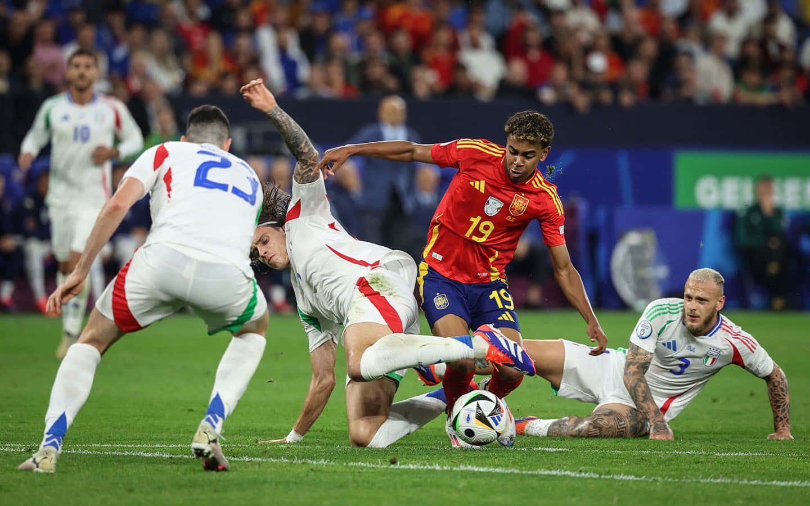

About Football

Football is the most popular sport in the world. It is played by two teams of eleven players and is watched by billions of fans globally. The game requires teamwork, skill, and strategy.
Major football competitions include the FIFA World Cup and the UEFA Champions League.
Famous Football Players Achievements
Lionel Messi
Lionel Messi is considered one of the greatest football players in history. He has won multiple Ballon d'Or awards and has achieved success at both club and international level.
- Multiple Ballon d'Or winner
- FIFA World Cup winner
- Top scorer for Barcelona
Cristiano Ronaldo
Cristiano Ronaldo is known for his incredible goal scoring ability and athletic performance. He has played for top clubs and won many major trophies.
- 5 Ballon d'Or awards
- Champions League winner
- Top international goal scorer
Top Football Clubs
Many football clubs compete at the highest level in leagues and international tournaments.
- Real Madrid
- Barcelona
- Manchester United
- Bayern Munich
Famous Players Table
| Player | Country | Achievements |
|---|---|---|
| Lionel Messi | Argentina | World Cup Winner |
| Cristiano Ronaldo | Portugal | Champions League Winner |
| Neymar | Brazil | Olympic Gold Medal |
Interesting Football Facts
Football is played in over 200 countries, making it the most popular sport in the world. The FIFA World Cup is one of the most watched sporting events globally.
Learn More
Visit FIFA Official Website for more information about football competitions and players.